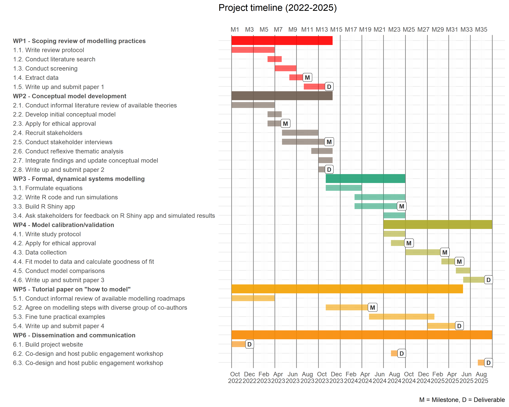

Improving the precision of behaviour change theories: Development and validation of a dynamic COMPutational model of LAPSE risk in smokers attempting to stop (COMPLAPSE)
Cigarette smoking remains the leading preventable cause of premature morbidity and mortality in Europe and beyond. Gold standard treatment for smoking cessation includes pharmacotherapy and behavioural support. However, smoking lapses – influenced by momentary fluctuations in cigarette availability, stress, and cravings – are a key source of treatment failure. COMPLAPSE aims to advance the state-of-the-art by developing and validating a formal, dynamical systems model of lapse risk, improving the precision of static behaviour change theories to account for observed complexities and laying the foundation for dynamically tailored, person-centred digital smoking cessation interventions for increased effectiveness. COMPLAPSE is interdisciplinary in scope – drawing on know-how from behavioural science, systems science and dynamical systems modelling – and directly contributes to Europe’s Path to the Digital Decade and its Strategic Framework for the Prevention of Non-Communicable Diseases.
COMPLAPSE is funded by the European Commission under the Horizon Europe Framework Programme (HORIZON), Grant No. 101065293 (PI: Dr. Olga Perski; Mentors: Prof. Nelli Hankonen and Prof. Eric Hekler).
Specifically, project COMPLAPSE aims to:
- Develop a conceptual model of lapse risk, drawing on the available literature and stakeholder input (addressed in WPs 1-2);
- Formulate mathematical equations that link the components in the conceptual model and perform computer simulations to examine the system behaviour (addressed in WP3);
- Collect EMA and sensor data and use this to calibrate/validate the formal, dynamical systems model (addressed in WP4).
- Use the knowledge accumulated within project COMPLAPSE to propose a set of “best practice” recommendations for how to use formal, dynamical systems modelling in health psychology research and practice (addressed in WPs 1-5)
See Figure 1 for an overview of the WPs within COMPLAPSE.

WP1
Health psychology theories are needed to improve capacities to predict, explain, and influence phenomena of interest. Scientific progress is hampered by the ‘theory crisis’, whereby most of our available health psychology theories exist as under-specified box-and-arrow diagrams and imprecise natural language descriptions of the inter-relationships between phenomena of interest. At the same time, a growing body of evidence made possible by recent technological advances highlights that many health-related behaviours display characteristics of dynamical systems (e.g., they fluctuate non-linearly within individuals over time and across contexts). Health psychologists have begun to recognise that we, as a field, must become better able to theorise about dynamical systems if we want to make progress on the most pressing issues of our times (e.g., addiction, obesity, mental health, and climate change). ‘Formal modelling’ (i.e., the mathematical or logical formalisation of a theory’s structure) in combination with a dynamical systems lens has the potential to narrow the gap between emerging empirical evidence and current health psychology theories, and simultaneously equip researchers and decision-makers with tools that can help us tackle the biggest challenges facing our societies today.
The aim of WP1 is therefore to conduct a scoping review of the extent and nature of research activities pertaining to the use of formal, dynamical systems modelling of health behaviours (e.g., tobacco smoking, alcohol consumption). We aim to synthesise existing methodological steps used in the published literature (i.e., a bottom up approach), with a view to aiding researchers who intend to use formal, dynamical systems modelling in future work. We will follow the scoping review guidelines developed by Arksey and O’Malley, starting with the identification and selection of relevant studies, followed by the charting of the data, and the collating, summarising, and reporting of the results. The scoping review protocol is available on the Open Science Framework.
WP2
Drawing on findings from the EMA literature (including a recent systematic review and meta-analysis) and an informal literature review of available theories of when and why people lapse when they try to stop smoking, we have developed an initial conceptual model using Lucidchart. Stakeholders are currently being invited to critique and add to/remove from the conceptual model through a series of one-to-one interviews. The methodology used is grounded in participatory systems mapping (Barbrook-Johnson & Penn, 2021). The following stakeholder groups are invited to contribute:
Researchers: Scientific researchers working across universities, research institutes, government or not-for-profit organisations specialising in behaviour change theory, smoking cessation, and/or computational modelling (n=6);
Policymakers and stop smoking practitioners: Policymakers/tobacco control experts working across government and not-for-profit organisations or stop smoking practitioners working across dedicated stop smoking services or general medical practice (n=6);
People with lived experience: Adult, daily or non-daily smokers who have made at least one past-year quit attempt OR recent ex-smokers who have quit smoking cigarettes in the past year (n=6).
The stakeholder interviews will be analysed using reflexive thematic analysis. Findings will be integrated with those from the informal literature review, and an updated version of the conceptual model will be produced. The updated conceptual model will serve as a starting point for the development of the formal, dynamical systems model in WP3.
WP3
Next, mathematical equations will be formulated and translated into R code. Initial parameter values will be selected and simulations will be run. Sensitivity analyses will be conducted, varying the initial parameter values to examine the model’s robustness. An R Shiny app will be developed to help visualise the simulation results. The stakeholders recruited in WP2 will be invited back to provide feedback on the simulated results.
WP4
Next, EMA and sensor data will be collected to help calibrate and validate the formal, dynamical systems model. Participants will be recruited via social media platforms. Eligibility criteria will include being an adult, daily smoker who i) owns a smartphone, ii) is willing to make a quit attempt, and iii) is willing to respond to regular EMAs and wear a sensor for the duration of the study (to be determined following the results from WPs 2-3). At least 50% of smokers will be recruited from lower socioeconomic position groups and an equal proportion of women and men will be recruited. We will fit the formal, dynamical systems model developed in WPs 2-3 to the data collected and goodness of fit statistics will be calculated. Model comparisons will be conducted.
WP5
The scoping review in WP1 used a bottom up approach to identify the extent and nature of modelling practices in the published literature. In WP5, we will draw on the knowledge accumulated within project COMPLAPSE and other, related modelling projects (i.e., more of a top down approach) to provide a tutorial on how to do formal, dynamical systems modelling in health psychology research and practice.
WP6
This website will be used for dissemination of findings from project COMPLAPSE, including scientific publications, talks, blogs, and workshops.